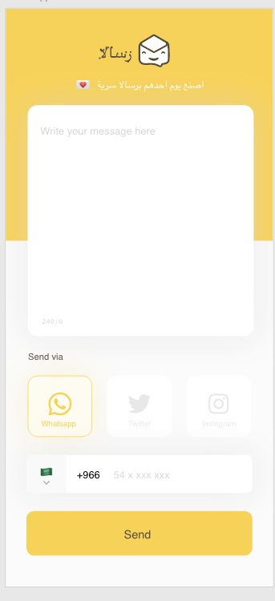
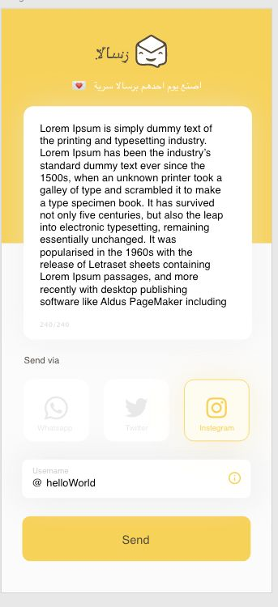
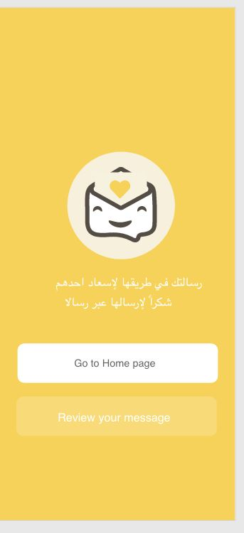

A content-first layout
The main reading area uses generous space and a single-column text structure.
Original app screens showing a message composer, content view, primary navigation, and an overlay state.



Mobile app design
5 curated images
Content hierarchy
Original design exports
Original app screens showing a message composer, content view, primary navigation, and an overlay state.
Original design exports supplied from the project archive.
Tap any image to explore the original in detail.
A retrospective design analysis based on the preserved screens.
The main reading area uses generous space and a single-column text structure.
Input and sending controls are grouped separately from the long-form content view.
The supplied presentation includes an overlay state within the same warm yellow identity.
A newly reconstructed wireframe study showing the hierarchy and content groups visible in the finished work.
Created for this portfolio from the final designs. This is a retrospective reconstruction, not evidence of original research, testing, or wireframing.
Want to talk about a project, a role, or a redesign? Get in touch.
Get in touch ↗jaynishad2010@gmail.com ↗